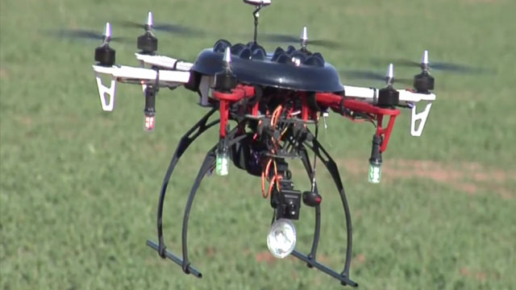

Dron
Dron jest wyposażony w minikomputer podobny do Raspberry, który steruje modułami znajdującymi się na dronie: GPS, GSM, bluetooth sBLE, czytnik RFID oraz sterownik silników odpowiedzialnych za poruszanie się drona. Dron startuje ze stacji bazowej i przelatuje nad pastwiskiem skanując wszystkie identyfikatory RFID w kolczykach. Dodatkowo dron może połączyć się z obrożą typu master i odebrać wszystkie dane, jeżeli na danym terenie nie ma zasięgu sieci GSM.
TODO
Specyfikacja techniczna
| MIN temperatura pracy | -10°C |
| MAX temperatura pracy | +50°C |
| Cena jednostkowa obroży master | 800zł |
| Cena jednostkowa obroży slave | 300zł |
| Maksymalny czas pracy obroży | 10 lat |
| Zasięg sBLE | 300m |
| Szerokość | ok 10cm |
| Długość (możliwość regulacji) | ok 60cm |
| Mikrokontroler | //TODO |